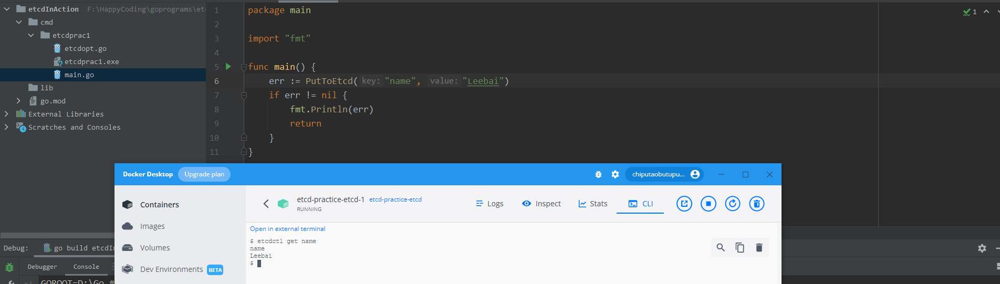

go操作etcd
环境部署：Docker部署etcd
新建项目 etcdInAction
- 项目名称：etcdInAction
- 项目根目录：etcdInAction
创建项目相关文件，目录如下：
etcdInAction
└── cmd
└── etcdprac1
└── etcdopt.go
└── main.go
存储key到docker
项目配置
goland中该项目的go build配置项如下：
- Run Kind: Directory
- Directory: F:\HappyCoding\goprograms\etcdInAction\cmd\etcdprac1
- Output directory: F:\HappyCoding\goprograms\etcdInAction\cmd\etcdprac1
- Working directory: F:\HappyCoding\goprograms\etcdInAction\cmd\etcdprac1
- Go tool arguments: -o etcdprac1.exe // 指定生成的exe的名字，生成exe的目录在上面的Output directory中已经指定
下载项目需要用到的包
goland Terminal运行以下命令：
PS F:\HappyCoding\goprograms\etcdInAction> go mod tidy
PS F:\HappyCoding\goprograms\etcdInAction> go get go.etcd.io/etcd/clientv3
输出结果
go: added github.com/coreos/etcd v2.3.8+incompatible
go: added go.etcd.io/etcd v2.3.8+incompatible
编码：etcdopt.go
封装了一些操作etcd的函数。
package main
import (
"context"
"flag"
"fmt"
"go.etcd.io/etcd/clientv3"
"log"
"time"
)
var addr = flag.String("addr", "http://127.0.0.1:2379", "etcd address")
var (
config clientv3.Config
client *clientv3.Client
)
func initEtcd() (c *clientv3.Client, err error) {
config = clientv3.Config{
Endpoints: []string{"127.0.0.1:2379"},
DialTimeout: 5 * time.Second,
}
client, err := clientv3.New(config)
if err != nil {
fmt.Println(err)
log.Println(err)
c = client
return c, err
}
return client, nil
}
func getKV() (clientv3.KV, error) {
client, err := initEtcd()
if err != nil {
log.Println(err)
return nil, err
}
kv := clientv3.NewKV(client)
return kv, nil
}
func PutToEtcd(key string, value string) error {
kv, err := getKV()
resp, err := kv.Put(context.TODO(), key, value)
if err != nil {
log.Println(err)
return err
}
log.Printf("resp=%s, revision=%d\n", resp, resp.Header.Revision)
fmt.Printf("resp=%s, revision=%d\n", resp, resp.Header.Revision)
return nil
}
func GetFromEtcd(key string) (string, error) {
kv, err := getKV()
if err != nil {
fmt.Println(err)
log.Println(err)
return "", err
}
resp, err := kv.Get(context.TODO(), key)
if err != nil {
fmt.Println(err)
log.Println(err)
return "", err
}
var s string
for _, kv := range resp.Kvs {
fmt.Println(string(kv.Key) + " " + string(kv.Value))
s += string(kv.Value)
s += " "
}
return s, nil
}
编码：main.go
package main
import "fmt"
func main() {
// 将key,value键值对为name=Leebai存入etcd
err := PutToEtcd("name", "Leebai")
if err != nil {
fmt.Println(err)
return
}
fmt.Println("=====================================")
// 获取值
recv, err := GetFromEtcd("name")
if err != nil {
fmt.Println(err)
}
// 打印输出存到etcd时key为name时的value值
fmt.Printf(recv)
}
执行结果
以下是goland控制台终端的显示结果
F:\HappyCoding\goprograms\etcdInAction\cmd\etcdprac1\etcdprac1.exe
2022/10/24 14:48:18 resp=&{cluster_id:14841639068965178418 member_id:10276657743932975437 revision:12 raft_term:3 }, revision=12
resp=&{cluster_id:14841639068965178418 member_id:10276657743932975437 revision:12 raft_term:3 }, revision=12
=====================================
name Leebai
Leebai
Process finished with the exit code 0
revision是指name这个键值对被修改的版本号。
下面展示本机部署的Docker环境中的执行结果： 
如图片中所示，确实在Docker环境中部署的etcd容器中查找到了上面程序条件的键值对[name,“Leebai”]
「真诚赞赏，手留余香」
 YinChao's Blogs
YinChao's Blogs
真诚赞赏，手留余香
使用微信扫描二维码完成支付

comments powered by Disqus